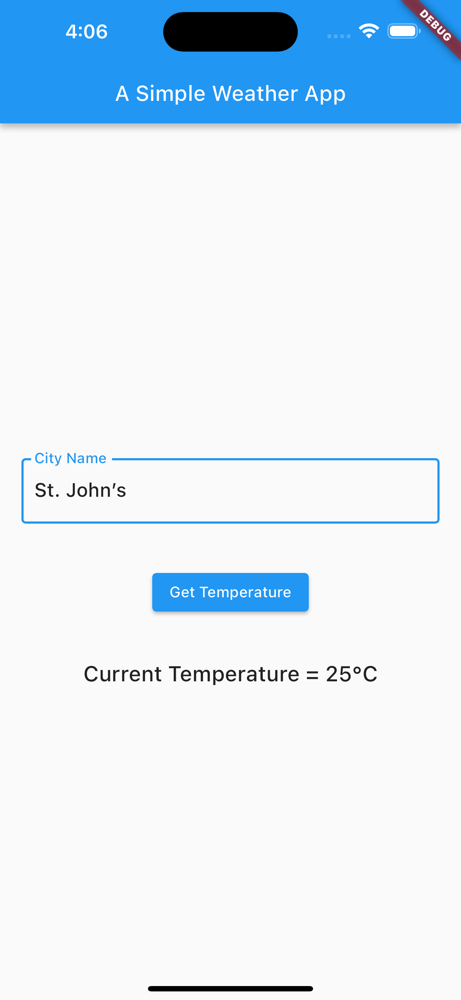
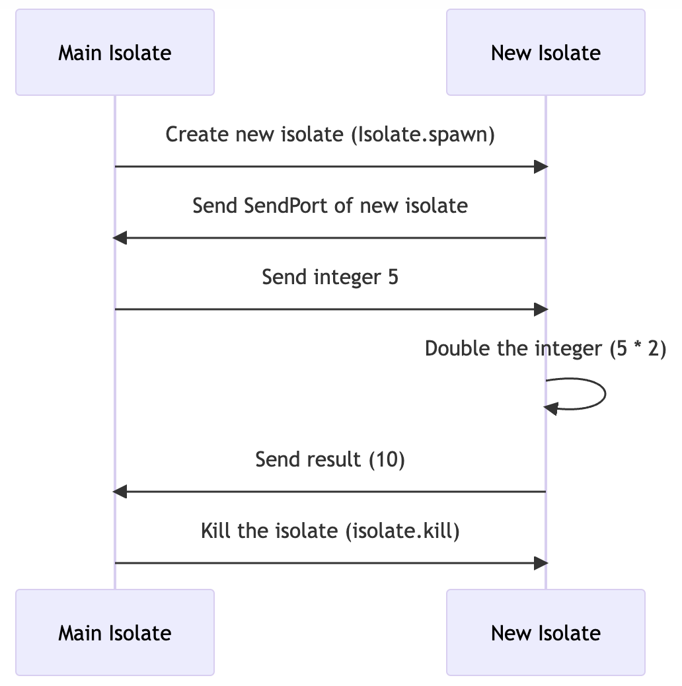

Asynchronous programming: futures, async, and await
Introduction
In this weather application, tapping the "Get Temperature" button initiates an asynchronous request to the OpenWeatherAPI servers. The app uses the API key to fetch current weather data for the city name entered by the user. Once the data is received, it updates the user interface without affecting the app's responsiveness.
If all operations were carried out synchronously, the app could become unresponsive while waiting for the data to be fetched, leading to a subpar user experience.

ElevatedButton(
onPressed: () async {
Weather w = await WeatherFactory(OPENWEATHER_API_KEY)
.currentWeatherByCityName(cityNameController.text);
print(w.temperature!.celsius?.toString());
setState(() {
weatherInfo = w;
});
},
child: Text('Get Temperature'),
)
By using asynchronous programming constructs like async and await, the application performs the IO-bound work in the background. This means that the UI remains responsive, allowing users to interact with other parts of the application while the data is being fetched.
Dart libraries have many functions that give back Future or Stream objects. These functions are quick to respond because they start a task that might take time (like reading a file) but don't wait for it to finish. They let your program keep running other things while waiting for the task to complete.
The async and await keywords help you write code that can do multiple things at once, but the code still looks and reads like regular, one-thing-at-a-time (or sequential) code.
Futures
What is a Future?
A Future is a Dart class that represents the outcome of an asynchronous operation. It can be in one of two states: either waiting for a result (Uncompleted) or having a result (Completed).
States of a Future
-
Uncompleted: When you call an async function, it gives you a Future that is waiting for the operation to finish or fail.
-
Completed: The Future is done and holds either a value or an error.
Types of Completion
-
With Value: A Future of type
Future<T>holds a value of typeT. For example,Future<String>will have a string value. -
With Error: If the async operation fails, the Future holds an error.
Examples
Basic Example
Here's a simple example where fetchUserOrder() returns a Future that completes after a delay. It doesn't return a value, so its type is Future<void>.
Future<void> fetchUserOrder() {
return Future.delayed(Duration(seconds: 2), () => print('Large Latte'));
}
void main() {
fetchUserOrder();
print('Fetching user order...');
}
In this example, "Fetching user order..." will print before "Large Latte" because of the delay in fetchUserOrder().
Error Example
In the following example, fetchUserOrder() completes with an error.
Future<void> fetchUserOrder() {
return Future.delayed(Duration(seconds: 2),
() => throw Exception('Logout failed: user ID is invalid'));
}
void main() {
fetchUserOrder();
print('Fetching user order...');
}
Here, the Future completes with an error about an invalid user ID.
Quick Summary
- A
Future<T>holds a value of typeT. - If it doesn't hold a value, its type is
Future<void>. - A Future can be either waiting for a result or completed with a value or an error.
That's the basics of Futures in Dart. You'll learn how to use them effectively with async and await in the next section.
Using async and await
3 Tasks example
In this example, there are three tasks. Task 2 utilizes the Future.delayed function, which causes Task 2 to wait asynchronously. The words "Task 2 complete" is only printed once the waiting period is over.
What happens if Task 3 has to wait for Task 2 to finish
In the following example, since task3 does not wait for task2 to finish executing, the output does not include the task2Data.
To solve this problem, we need to ask task3 to wait for task2 to finish executing.
Lets use await to wait for the future to complete
Now we will add await and async to make sure we wait for the future to complete and only then call task3 with the data returned from task2.
Useful Links
Multithreading using Isolates
What is a ReceivePort?
ReceivePort is a part of the dart:isolate library and is used to receive messages from other isolates. When you create a ReceivePort, it provides a SendPort that you can send to other isolates. Those isolates can then use that SendPort to send messages back to the ReceivePort.
Here's a simple example to help you understand how ReceivePort works:
import 'dart:isolate';
// Function to run in the new isolate
void isolateFunction(SendPort sendPort) {
print('New isolate: Sending "Hello from new isolate!"');
sendPort.send('Hello from new isolate!');
}
void main() async {
// Create a ReceivePort to receive messages from the new isolate
final receivePort = ReceivePort();
// Create a new isolate and pass the SendPort of the main isolate's ReceivePort
await Isolate.spawn(isolateFunction, receivePort.sendPort);
// Listen for messages from the new isolate
receivePort.listen((data) {
print('Main isolate: Received "$data"');
});
}
In this example:
- We create a
ReceivePortin the main isolate. - We spawn a new isolate and pass the
SendPortof theReceivePortto it. - The new isolate sends a message ("Hello from new isolate!") to the
ReceivePortusing theSendPort. - The main isolate listens for messages on the
ReceivePortand prints the received message.
When you run this code, you'll see output like this:
New isolate: Sending "Hello from new isolate!"
Main isolate: Received "Hello from new isolate!"
Message passing between isolates
Below is a Dart code example that demonstrates creating a new isolate and passing messages between the main isolate and the new isolate. In this example, we'll pass an integer from the main isolate to the new isolate, double it, and then send it back to the main isolate.

import 'dart:isolate';
// Function to run in the new isolate
void isolateFunction(SendPort sendPort) {
// Create a ReceivePort to receive messages from the main isolate
final receivePort = ReceivePort();
// Send the SendPort of the new ReceivePort to the main isolate
sendPort.send(receivePort.sendPort);
// Listen for messages from the main isolate
receivePort.listen((data) {
print('Received data in new isolate: $data');
// Double the received data
final result = data * 2;
// Send the result back to the main isolate
sendPort.send(result);
});
}
void main() async {
// Create a ReceivePort to receive messages from the new isolate
final receivePort = ReceivePort();
// Create a new isolate and pass the SendPort of the main isolate's ReceivePort
final isolate = await Isolate.spawn(isolateFunction, receivePort.sendPort);
// Listen for messages from the new isolate
receivePort.listen((data) {
if (data is SendPort) {
// Send some data to the new isolate using the received SendPort
data.send(5);
} else {
print('Received result from new isolate: $data');
// Kill the isolate after receiving the result
isolate.kill();
}
});
}